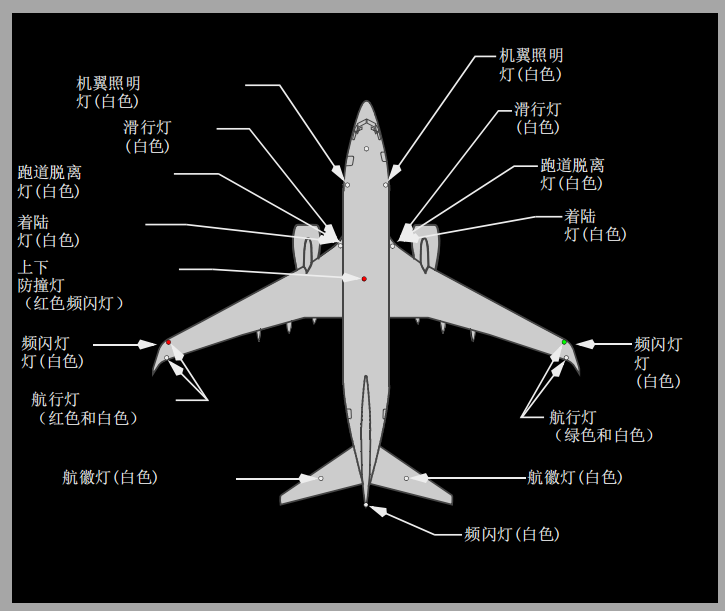

1 可收放式着陆（RETRACTABLE LANDING）灯电门
RETRACT（收起） – 可收放式着陆灯收起并熄灭。
EXTEND（伸出） – 可收放式着陆灯伸出并熄灭。
ON（开） – 可收放式着陆灯伸出并亮。
可收放式着陆灯
可收放式着陆灯安装在飞机机身下部。灯设计为伸出并向前照射，平行于飞机吃水线。这种灯可以在任意速度伸出。
2 固定式着陆（FIXED LANDING）灯电门
OFF（关） – 固定式着陆灯熄灭。
ON（开） – 固定式着陆灯亮。
固定式着陆灯
两个固定着陆灯安装在机翼前缘。固定向前方和下方照射发光。
3 跑道脱离（RUNWAY TURNOFF）灯电门
OFF（关） – 装在机翼翼根前缘的跑道脱离灯熄灭。
ON（开） – 跑道脱离灯亮。
跑道脱离灯
跑道脱离灯安装在每个机翼的根部。这些灯向主起落架前部提供照明。
4 滑行灯电门
OFF（关） – 前轮滑行灯熄灭。
ON（开） – 前轮滑行灯亮。
AUTO（自动） – 起落架收上时，前起落架滑行灯自动熄灭。
滑行灯
滑行灯安装在前轮支架上并与前轮指向一致。(按选型)LED 灯安装在机翼灯槽中，为飞机提供着陆灯、滑行灯和跑道脱离灯的所有功能。当着陆灯和滑行灯都在ON 位时，滑行灯功能被着陆灯功能超控。

略...